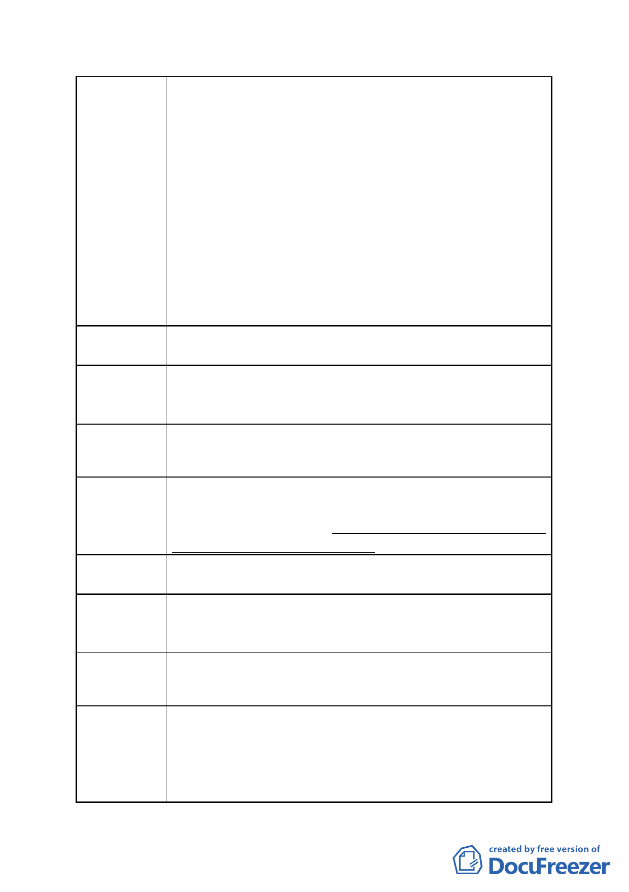

市府回應
1.查旨揭允許使用組別第 14 組之人民團體之使用項目包含「職業團
體、社會團體、政治團體」，第 37 組之旅遊及運輸服務業包含「貨
櫃、貨運業辦事處；公路、市區汽車客運業辦事處；旅遊業及遊
覽車客運公司辦事處；航空、航運、內河運輸公司辦事處；報關
行、快遞辦事處；營業性停車空間；計程車客運業、小客車租賃
業車輛調度停放場；船務代理業」。兩組使用組別與促進影視音產
業垂直鏈結、異業結盟提升國際競爭力之目標並無關聯性。
2.本計畫變更目的係為發展影視音產業，與原計畫為科技產業發展所
訂部分使用內容並不相符，且策略性產業使用項目中，與影視音
產業發展相關者(文化藝術工作室、劇場、舞蹈表演場、剪接錄音
工作室、電影電視攝製及發行業)已納入本計畫允許使用項目。
3.考量本計畫目標及臺北市影視音產業園區政策希冀達到的產業推
動效益四大面向，建議仍應維持本計畫允許使用項目之規定。
委員會決議 依市府回應說明辦理
陳情理由 5
該地位處原基隆河截彎取直地，地質條件無法深挖，向上又受限於飛
航區的建築高度，周邊又都是私有地，也不可能興建公有停車場，希
望未來都委會審查時能特別考慮給予停車獎勵。
建議辦法 5 考量本案之政策目的給予停車獎勵。
市府回應
依本府 97 年 8 月 5 日公告「變更臺北市『基隆河（中山橋至成美橋
段）計畫案（南段地區）』及『內湖區新里族段羊稠小段附近地區都
市計畫案』計畫案」內規定，案址現行計畫即不適用停獎。且本市已
取消停車獎勵政策，故建議不予採納。
委員會決議 依市府回應說明辦理
陳情理由 6
由於基地交通不便，未來並無捷運規劃，亦無公車路線規劃，未來對
外交通恐無法達到 貴府就影視音園區引入影視、文創、娛樂、觀光
等複合式產業等目的之期待。
建議辦法 6 市府規劃園區聯外及整體城市觀光旅遊之大眾運輸系統建置。
市府回應
1.查本府 97 年 8 月 5 日公告之都市計畫案內已載明：「為鼓勵本地區
各建築基地使用能充分利用或提供大眾運輸工具，各基地於申請都
市設計審議時應擬具大眾運輸使用計畫及停車空間提供公共使用
計畫，併同審議後據以實施。」；另本案 BOT 政策公告內亦規定：「應
評估本基地開發衍生之交通衝擊，…並以內部化方式設置。」。故
- 11 -